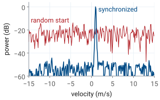
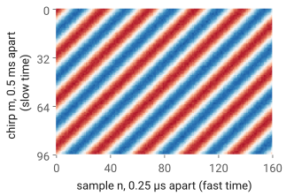
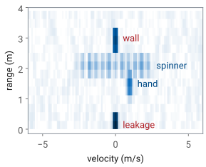
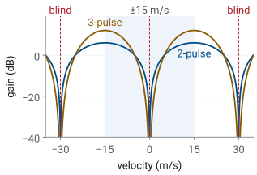
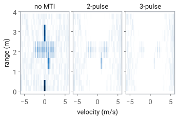

L29 - Range-Doppler and MTI#
Range-Doppler and MTI
A burst of 256 chirps measures velocity to 0.12 m/s, and a pulse canceller removes every return that does not move.
Lesson 29 · Antennas, Phased Arrays, and Radar Systems · Dr. Neil Rogers
Printing
To print the slides, switch to present mode and print: one slide a sheet, with room for notes. Print from read mode for the whole lesson.
Learning Objectives
- I can process FMCW radar data to produce range, range-waterfall, and range-Doppler results.
- I can apply moving target indication (MTI) processing to distinguish moving targets from clutter.
Lesson 26 defined the Doppler shift and the velocity resolution of a burst of pulses, Lesson 27 showed that adding the chirps of a burst coherently is what makes a weak target detectable, and Lesson 28 turned one chirp into a range profile. This lesson puts the three together. We send a burst of chirps, arrange the samples as a matrix, and take a second FFT across the chirps, which gives the range-Doppler map: every target at its range and its radial velocity at once. Then we remove the returns that do not move, the walls, the bench, and the kit’s own leakage, with moving target indication (MTI).
You will run all of this on your own kit in the L29 Lab, outside class, so the lesson carries the whole argument in read mode. The processing is written in terms of the two functions the course’s radar_lab.py provides for it, range_doppler and mti, which build on the L28 range code.
From One Chirp to a Burst
One chirp gives a range profile (L28).
A hand at 1 m/s moves 0.3 mm during a 300 µs chirp, 1% of a wavelength.
Velocity comes from comparing chirps: the burst sends 256, one every 0.5 ms.
In Lesson 28 one chirp gave one range profile. The echo, compared with the chirp still going out, is a tone whose frequency is proportional to range, and the range FFT sorts the echoes into range cells. The burst the L29–L31 Labs use sweeps 500 MHz in 300 µs, so the beat rises by 11.1 kHz for every meter of range, and the 0.30 m range cells of \(\Delta R = c/2B\) are 3.33 kHz apart.
A moving target also shifts the echo by its Doppler frequency, \(f_D = 2v/\lambda\), which is 66.7 Hz for every meter per second at the 3.0 cm wavelength of a 10 GHz carrier. Within a single chirp that shift is invisible. A hand moving at 1 m/s shifts the beat by 66.7 Hz, a fiftieth of one range cell, and moves only 0.3 mm while the chirp lasts. By the rule of Lesson 26, an observation 300 µs long resolves frequencies 3.33 kHz apart, which is 50 m/s of velocity.
To measure velocity we have to watch the target for longer, and an FMCW radar does it by repeating the chirp. The burst sends \(M = 256\) chirps of 300 µs at a pulse repetition interval (PRI) of 0.5 ms, so it watches every range cell for 128 ms. The rest of the lesson is how the radar turns those 256 range profiles into a velocity, following ADI’s Range Doppler Radar Processing lab.
Every Chirp Starts at a Known Time
Velocity is a phase comparison from one chirp to the next.
A 1 m/s hand moves the phase 12° a chirp; a 1 µs start error, 42°.
The kit starts each chirp a fixed delay after the capture starts.

The range FFT of Lesson 28 needs only the frequency of the beat, so it does not care when the chirp started. The velocity measurement does. It compares the phase of the beat in one chirp with its phase in the next, and a moving target changes that phase by only a small, steady amount from chirp to chirp. A hand closing at 1 m/s moves 0.5 mm in one PRI, which shortens the round trip by 1.0 mm, a thirtieth of a wavelength, and advances the phase by 12°.
The beat phase also depends on when the samples start. A hand at 1.5 m has a beat of 117 kHz, the 0 m frequency of about 100 kHz that the L28 calibration measures plus 11.1 kHz per meter, so starting the samples 1 µs late changes the phase by \(360° \times 0.117 = 42°\). If the start time wanders by a microsecond from chirp to chirp, the error is larger than the signal we are trying to measure.
By default the board’s receiver simply fills a buffer with samples, with no relation between the start of the buffer and the start of any chirp. ADI’s Synchronizing Radar Chirps lab describes how the PHASER fixes this: a timing engine in the radio starts the capture and then fires each chirp at a programmed delay after it, one every PRI, so every chirp’s samples begin at the same point of its ramp. The capture format records that PRI as PRI, and every velocity on this page depends on it being exact.
The figure shows the difference in the hand’s range cell. With the chirps synchronized, the Doppler FFT of the next frames collects the hand into one sharp peak at +1 m/s. With each chirp starting at a random time within its PRI, the phase from chirp to chirp is random, and the same energy spreads evenly across every velocity: the hand is still there in range, but it has no velocity, and it sits 20 dB lower, close to the noise.
Fast Time and Slow Time

A row is one chirp: 1200 samples, 0.25 µs apart (fast time).
A column is one sample across chirps, 0.5 ms apart (slow time).
iqin your capture is this matrix,n_chirps × n_samples.
Stack the 256 chirps of a burst as the rows of a matrix. Along a row the samples are 0.25 µs apart, the 4 MSPS sample rate, and a row covers the 300 µs ramp in 1200 samples. That direction is fast time. Down a column the samples are one PRI apart, 0.5 ms, the same instant of each chirp; that direction is slow time. ADI draws the matrix the other way, chirps as columns; the capture format of the L28–L31 Labs stores it as the iq array, one row per chirp, n_chirps × n_samples, so the code on this page follows that layout.
The figure is the real part of that matrix for a single hand at 1.5 m, closing at 1 m/s, for the first 96 chirps and 160 samples. Across a row the beat oscillates at 117 kHz, one cycle every 34 samples; that frequency is the range. Down a column the same sample oscillates once every 30 chirps, because the phase advances 12° a chirp; that rate is the velocity. The stripes are diagonal because both are happening at once. A stationary target would draw vertical stripes, the same in every row.
The Phase From Chirp to Chirp
In slow time each range cell holds a tone at \(f_D = 2v/\lambda\).
1 m/s: 66.7 Hz, 12° a chirp.
Take the range FFT of every row. The target now sits in the same range cell of every chirp, and that cell holds a complex number whose phase is the phase of the echo, \(-4\pi R_m/\lambda\), set by the round trip \(2R_m\) in wavelengths. Between chirps the target moves. With a closing speed \(v\), the range at chirp \(m\) is \(R_m = R_0 - v\ m\ T_\text{PRI}\), and substituting it gives the chain on the slide. The first term is a constant. The second grows linearly with \(m\), which is a tone in slow time at
the Doppler shift of Lesson 26, with the same sign: a closing target has a positive frequency. At \(\lambda = 3.0\) cm, 1 m/s is 66.7 Hz, and in one PRI of 0.5 ms the phase advances \(360° \times 66.7 \times 0.5 \times 10^{-3} = 12°\).
Two effects that the chain leaves out are small for this burst. The Doppler shift also moves the beat in fast time, but at the ±15 m/s limit of the next frames it is 1.0 kHz against 11.1 kHz per meter, a range error of 0.09 m, under a third of a range cell. And the target moves during the burst: at 1 m/s it covers 0.128 m in 128 ms, less than one 0.30 m cell, which is the dwell limit of Lesson 27. A much faster target walks across several cells during the burst and smears in range; the widget later in the lesson shows it.
The Range-Doppler Map

A range FFT along each row, then a Doppler FFT down each column.
Returns that do not move sit in the 0 m/s column.
A spinner’s arms spread over ±2.2 m/s at one range.
The second FFT, down each column of the range-transformed matrix, finds the slow-time tone in every range cell. The result is the range-Doppler map: range on one axis, radial velocity on the other, and the power of each cell. Each FFT is the coherent integration of Lesson 27, so a target’s energy from all 1200 × 256 samples collects into one cell.
The figure is a map computed with the course’s burst numbers for a scene like the one in the L29 Lab. The kit’s own transmit leakage appears at 0 m and a wall at 3.0 m; neither moves, so both sit in the 0 m/s column, and they are the strongest returns on the map. A hand at 1.5 m closing at 1.0 m/s sits at +1.0 m/s. A fidget spinner at 2.1 m, three arms 3.5 cm long at 10 revolutions a second, has arm tips moving at \(2\pi \times 0.035 \times 10 = 2.2\) m/s; the arms move toward and away from the radar as they turn, so the spinner covers a band of velocities from −2.2 to +2.2 m/s at a single range. That spread is micro-Doppler, which Lesson 31 uses to classify targets.
Both FFTs use a Hann window, as the range FFT did in L28. The window matters more in Doppler than in range: the wall is 18 dB stronger than the hand here, and the first sidelobe of an unwindowed FFT is only 13 dB down, so without the window the wall’s sidelobes would spread across every velocity at its range. The Hann window puts the first sidelobe 31 dB down.
The provided radar_lab.py does this, and the L29 notebook runs it on your captures. The range FFT on each row is the one from L28.
def range_doppler(cap, window="hann"):
"""Range-Doppler map: (rd_db, range_m, vel_mps), rd_db indexed [range, velocity]."""
rp = range_fft(cap, window) # n_chirps x n_bins, from L28
r = range_axis(cap)
keep = r >= 0
rp = rp[:, keep]
m = rp.shape[0]
wd = _window(window, m)
rd = np.fft.fftshift(np.fft.fft(rp * wd[:, None], axis=0), axes=0) / wd.sum()
lam = C / cap["fc"]
vel = np.fft.fftshift(np.fft.fftfreq(m, cap["PRI"])) * lam / 2
rd_db = 20 * np.log10(np.abs(rd.T) + 1e-12)
return rd_db, r[keep], vel
The velocity axis converts each Doppler bin to velocity with \(v = f_D\lambda/2\). The module follows the conventions of this page: positive velocity is closing, toward the kit, as in Lesson 26; the map is indexed [range, velocity], which is the order Lesson 30’s cfar_2d expects; only ranges at or beyond 0 m are kept; and each FFT is divided by the sum of its window, so a tone of amplitude 1 reads 0 dBFS whatever the window. A hand moving toward the kit therefore lands at positive velocity, and checking that on your own map is the first test of the velocity axis.
The Velocity Axis
256 chirps, 0.5 ms apart: \(\Delta v = 0.12\) m/s, \(v_\text{max} = \pm 15\) m/s.
A target at +22 m/s appears at −8 m/s.
The Doppler FFT of \(M\) slow-time samples, \(T_\text{PRI}\) apart, has bins \(1/(M\ T_\text{PRI})\) apart in frequency, which is the rule of Lesson 26: watching for \(M\ T_\text{PRI}\) resolves its reciprocal. Converting with \(v = f_D\lambda/2\) gives the velocity resolution
The slow-time samples come once per PRI, so the Doppler FFT sees the tone sampled at the PRF, 2 kHz, and it can only tell apart frequencies within ±1 kHz. That is the maximum unambiguous velocity,
A faster target aliases. At +22 m/s the phase advances 264° a chirp, which the FFT cannot tell from −96°, so the map reports \(22 - 30 = -8\) m/s. These are the same two formulas ADI’s Range_Doppler_Processing.py prints as its velocity resolution and maximum velocity.
Choosing the Burst
Burst |
\(\Delta v\) (m/s) |
\(v_\text{max}\) (m/s) |
\(\Delta R\) (m) |
|---|---|---|---|
256 chirps, 500 MHz |
0.12 |
±15 |
0.30 |
32 chirps |
0.94 |
±15 |
0.30 |
200 MHz chirp |
0.12 |
±15 |
0.75 |
The chirp count sets \(\Delta v\), the bandwidth \(\Delta R\), the PRI \(v_\text{max}\).
Each parameter of the burst controls one axis of the map. The number of chirps \(M\) sets the velocity resolution and nothing else: 32 chirps watch for 16 ms and resolve 0.94 m/s, 128 chirps resolve 0.23 m/s, and 256 chirps resolve 0.12 m/s. The chirp bandwidth sets the range resolution and nothing else: dropping from 500 MHz to 200 MHz widens every target from 0.30 m to 0.75 m in range. The PRI sets the velocity limit, and a longer chirp needs a longer PRI to fit in, so a 500 µs ramp, which cannot fit in a 0.5 ms PRI with time to reset, forces a slower PRF and a smaller \(v_\text{max}\). These are the experiments ADI’s range-Doppler lab suggests, and the L29 Lab runs the first two on your own kit.
More chirps also have two drawbacks. The integration gain of Lesson 27 is \(10\log_{10}M\): 24.1 dB for 256 chirps and 15.1 dB for 32, so a short burst has a higher noise floor on the map. A long burst refreshes the map less often, 128 ms for 256 chirps, and lets a fast target cross range cells while the burst lasts.
Range-Doppler Explorer
The widget computes a range-Doppler map from a simulated burst with the course’s numbers: leakage at 0 m, a wall at 3.0 m, and a hand at 1.5 m whose closing speed you set. Beside the map is the power gain of the MTI filter against velocity, with the hand’s speed marked; the next frames derive it. Start with the hand at +1 m/s and change the number of chirps: the hand’s spot narrows in velocity as \(M\) grows and the noise floor drops. Move the hand past +15 m/s and watch it reappear at negative velocity, and at more than a few meters per second watch it smear in range as it crosses cells during the burst. Turn chirp sync off: every target keeps its range and loses its velocity. Then step through the MTI settings at a few speeds.
Clutter Sits at Zero Velocity
Leakage, walls, and the bench return the same phase every chirp.
They land in the 0 m/s column, up to 30 dB above a hand.
Their sidelobes and spread can cover a slow mover.
Everything that does not move returns the same echo on every chirp: the leakage from the transmit antenna straight into the receiver, the walls, the bench, the stand the kit sits on. Radar engineers call these returns clutter. On the map they all sit at 0 m/s, and in a lab room they are by far the strongest returns. In the scene of the earlier figure the leakage is 30 dB above the hand and the wall is 18 dB above it.
The Doppler FFT already separates clutter from a moving target, so it is fair to ask why we would remove it. There are three reasons. A strong return has sidelobes in Doppler even with a window, and anything that changes the clutter slightly from chirp to chirp, a vibrating stand, a fan’s air moving a cable, the small timing error that chirp sync cannot remove, spreads its energy across nearby velocities, where a slow target competes with it. The CFAR detector of Lesson 30 estimates the noise from the cells around each test cell, and a clutter ridge in those cells raises the threshold for the targets beside it. And the spectrogram of one range bin, which the L29 Lab keeps for Lesson 31, has far less Doppler resolution than the full burst, so a strong clutter line there covers a wide band. Removing clutter before the Doppler FFT addresses all three, and that is moving target indication (MTI).
Pulse Cancellers
A return that repeats exactly from chirp to chirp subtracts to zero.
The 3-pulse canceller is the 2-pulse canceller applied twice.
The simplest MTI filter subtracts each chirp from the one before it, sample by sample. ADI’s MTI Radar Processing lab calls it the two-pulse canceller. A return that is identical in two consecutive chirps, which is what a stationary return is when the chirps are synchronized, subtracts to zero. A moving target’s phase has advanced between the chirps, so the difference is not zero, and the target survives.
Applying the same subtraction to the output a second time gives
the three-pulse canceller. Its notch at 0 m/s is deeper and wider, as the next frame shows.
Both filters work across chirps, so they can be applied to the raw beat samples before the range FFT, as ADI’s script does, or to the range-transformed rows after it; the FFT is linear, so the two give the same map. Each output has one or two fewer chirps than the input. The provided radar_lab.py does this too, and the L29 notebook runs it on your captures. It returns a capture, so range_doppler(mti(cap, "2pulse")) works without any other change:
def mti(cap, kind="2pulse"):
"""A pulse canceller across chirps; returns a capture, one or two chirps shorter."""
def cancel(x): # chirps on the second-to-last axis
if kind == "2pulse":
return x[..., 1:, :] - x[..., :-1, :]
if kind == "3pulse":
return x[..., 2:, :] - 2 * x[..., 1:-1, :] + x[..., :-2, :]
if kind == "none":
return x
raise ValueError(f"kind must be '2pulse', '3pulse', or 'none', not {kind!r}")
out = {**cap, "iq": cancel(cap["iq"])}
if "iq_ch" in cap:
out["iq_ch"] = cancel(cap["iq_ch"])
return out
Canceller Response and Blind Speeds
Blind at 0 m/s and every 30 m/s.
Peak at ±15 m/s: +6.0 dB (2-pulse), +12.0 dB (3-pulse).

To find what the canceller does to a target of any speed, feed it the slow-time tone of the earlier frame, \(x_m = A\ e^{j2\pi f_D m T_\text{PRI}}\). The two-pulse output is
so the tone comes out with its power multiplied by
The three-pulse canceller is two of these in a row, so its power gain is the square, \(16\sin^4\left(\pi f_D T_\text{PRI}\right)\). Both gains are zero at \(f_D = 0\), the clutter. Both peak at \(f_D = \pm 1/(2T_\text{PRI})\), the edge of the unambiguous window at ±15 m/s, at 4 (+6.0 dB) and 16 (+12.0 dB).
The gain is also zero wherever \(f_D T_\text{PRI}\) is a whole number \(k\): the target’s phase then advances a whole number of turns from one chirp to the next, and the canceller cannot tell it from a stationary return. Those are the blind speeds,
every 30 m/s for this burst. The first blind speed is twice \(v_\text{max}\), which is the aliasing of the velocity-axis frame seen from the other side: a target at 30 m/s aliases to 0 m/s on the map and is removed with the clutter. Nothing in the L29 Lab moves that fast, but a car or a drone can, and a radar that must see them changes its PRI from burst to burst so that a target blind at one PRI is visible at the next.
What MTI Removes

The leakage and the wall are gone.
A 1 m/s hand loses 16.6 dB of SNR (2-pulse) or 35.0 dB (3-pulse).
A target that stops, or crosses the beam, vanishes too.
The figure runs the scene of the range-Doppler frame through each canceller and draws all three maps on one scale. Both cancellers remove the leakage and the wall completely; what is left at 0 m/s is the residue of the small chirp-to-chirp timing error in the simulation, which is why chirp sync sets how deep the cancellation can go.
The cancellers also weaken moving targets, and they weaken the slow ones most. A hand at 1.0 m/s has \(f_D T_\text{PRI} = 66.7 \times 0.5 \times 10^{-3} = 0.033\), deep in the notch: the two-pulse canceller multiplies its power by \(4\sin^2(0.105) = 0.044\), −13.6 dB, and the three-pulse by −27.2 dB. The cancellers raise the noise as well, because they add independent noise samples: the noise power gain is \(1^2 + 1^2 = 2\), +3.0 dB, for the two-pulse canceller and \(1^2 + 2^2 + 1^2 = 6\), +7.8 dB, for the three-pulse. The hand’s SNR therefore falls by 16.6 dB with the two-pulse canceller and 35.0 dB with the three-pulse. Against noise alone a canceller lowers the SNR of every target slower than about 7.5 m/s (two-pulse) or 8.6 m/s (three-pulse). MTI improves the ratio of a target to the clutter, not to the noise, so it helps where clutter, not noise, limits what you can see.
Two more consequences follow from the notch. A target that stops moving is removed, and so is one moving across the beam, whose radial velocity is zero. The spinner shows both effects at once: the arms moving fastest along the line of sight survive, and the parts of its spectrum near 0 m/s are removed with the clutter. For a hovering drone, ADI’s MTI lab points out, the body disappears but the blades’ micro-Doppler remains, which is what Lesson 31 classifies.
The choice of canceller is therefore a choice about the scene. With strong clutter and fast targets the three-pulse canceller gives the cleanest map; for a slow hand the two-pulse canceller, or none, keeps more of the target. The L29 Lab measures both on the same captures.
Summary
Symbol / idea |
What it is |
Number for the L29 burst |
|---|---|---|
Burst |
\(M\) chirps, one every \(T_\text{PRI}\) |
256 chirps of 300 µs, 0.5 ms PRI, 128 ms |
Chirp sync |
every chirp starts a fixed delay after the capture |
1 µs of error is 42° at 117 kHz |
Fast time |
samples within one chirp, a row of |
1200 samples, 0.25 µs apart |
Slow time |
the same sample across chirps, a column |
256 samples, 0.5 ms apart |
Slow-time tone |
\(f_D = 2v/\lambda\) in every range cell |
66.7 Hz, 12° a chirp, at 1 m/s |
Range-Doppler map |
range FFT on rows, Doppler FFT on columns |
0.30 m by 0.12 m/s cells |
Velocity resolution |
\(\Delta v = \lambda/(2M\ T_\text{PRI})\) |
0.12 m/s; 0.94 m/s at 32 chirps |
Maximum velocity |
\(v_\text{max} = \pm\lambda/(4T_\text{PRI})\) |
±15 m/s; +22 m/s shows at −8 m/s |
2-pulse canceller |
\(y_m = x_m - x_{m-1}\), gain \(4\sin^2(\pi f_D T_\text{PRI})\) |
−13.6 dB at 1 m/s, +6.0 dB at 15 m/s |
3-pulse canceller |
\(y_m = x_m - 2x_{m-1} + x_{m-2}\), gain squared |
−27.2 dB at 1 m/s, +12.0 dB at 15 m/s |
Noise gain |
sum of the squared taps |
+3.0 dB and +7.8 dB |
Blind speeds |
\(v_\text{blind} = k\lambda/(2T_\text{PRI})\) |
every 30 m/s |
Looking Ahead
Lesson 30 takes the range-Doppler map this lesson produces and decides which cells hold targets, setting the threshold from the cells around each one rather than from a noise power assumed in advance, as Lesson 27 showed it must. The L30 Lab runs that detector on the maps you make in the L29 Lab, with and without MTI. Lesson 31 then looks inside a detection: the slow-time signal of one range cell, cut into short pieces and transformed one piece at a time, is a spectrogram, and the micro-Doppler in it, the spinner’s arms or a walker’s limbs, is what tells one kind of target from another.
L29 Lab
GUI first: the Phaser app’s range-Doppler and MTI views, a hand, then a fidget spinner.
Notebook: change the chirp count and bandwidth; switch 2-pulse to 3-pulse.
Keep one range cell’s spectrogram for L31.
The L29 Lab runs this lesson on your own kit, outside class, GUI first. In the Phaser app’s range-Doppler view you will check the velocity axis with your hand moving toward and away from the kit, then watch a fidget spinner spread into micro-Doppler at a single range, and the MTI view shows the clutter disappearing. You will then save captures with the range-Doppler settings of this page and run them through the course’s L29 notebook, which calls range_doppler and mti from the provided radar_lab.py. Your tasks there are small changes: the chirp count and the bandwidth, which test the resolution formulas on your own maps, and the canceller, switched from 2-pulse to 3-pulse on the same captures, which shows what MTI removes and how much it weakens a slow target. Last, you will keep the slow-time signal of the range cell holding the spinner, which the L31 Lab turns into a spectrogram. Your maps, with and without MTI, are what the L30 Lab runs CFAR on, so keep the captures and the notebook.
Note
The L29 Lab is under construction. Its procedure and packet will appear here after the L28 Lab is published, so that they can start from its code and its recorded data.